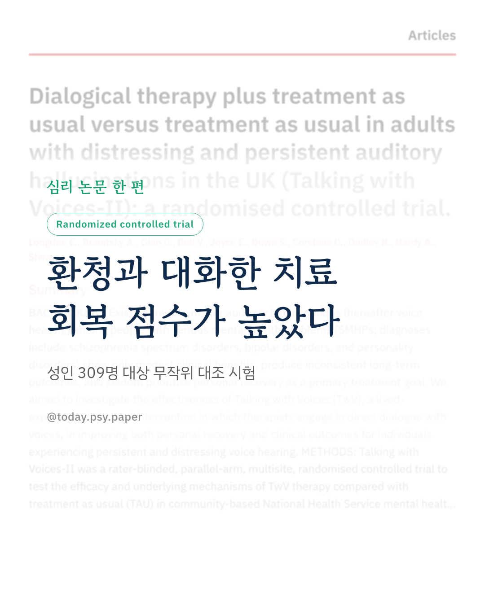
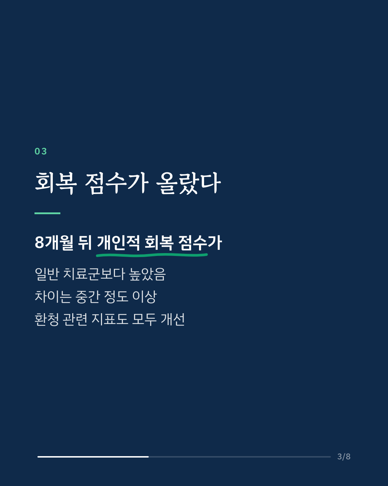
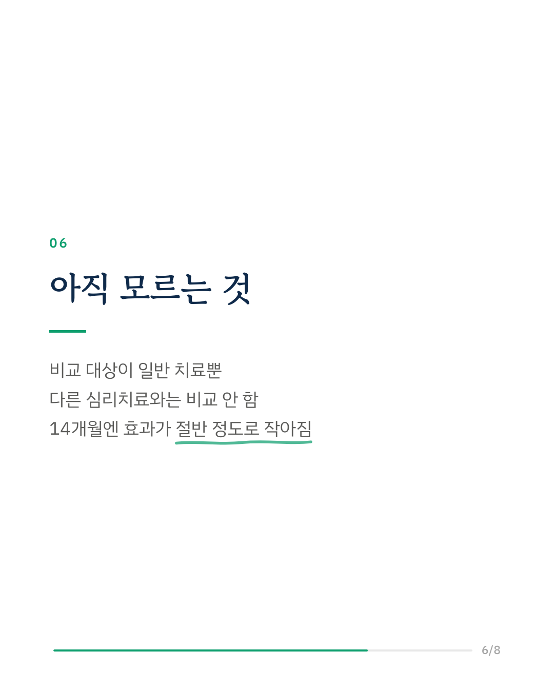
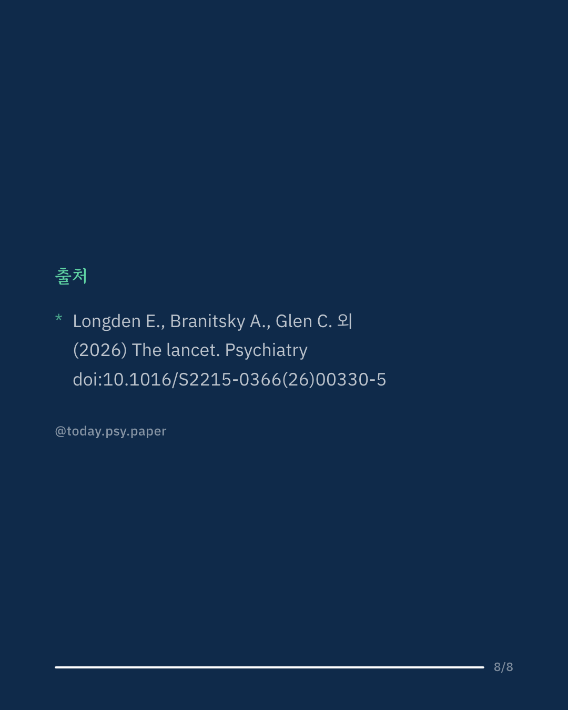

조현병이나 양극성 장애 등에서 괴로운 환청이 오래 이어지는 경우, 기존 치료의 효과는 크지 않은 편이었습니다. 영국 연구진은 치료자가 환청의 목소리와 직접 대화하는 심리치료 '목소리와 대화하기(Talking with Voices)'를 시험했습니다. 정신증을 직접 겪은 당사자들이 연구 설계와 진행을 함께 이끌었습니다. 영국 4개 지역 성인 309명을 무작위로 나눠, 절반은 일반 치료에 이 치료를 더해 8개월간 최대 26회기 받았고 나머지는 일반 치료만 받았습니다. 8개월 뒤 대화 치료 집단의 개인적 회복 점수가 중간 정도 이상 높았습니다. 환청 관련 지표와 부정적 자기 신념, 외상 후 스트레스 증상도 나아졌지만, 해리 증상에는 차이가 없었습니다. 14개월 시점에도 회복 효과는 절반 정도로 작아진 채 남아 있었습니다. 다만 비교 대상이 일반 치료뿐이어서, 다른 심리치료와 견줘도 같은 차이가 나는지는 아직 알 수 없습니다. The Lancet Psychiatry (2026), 'Dialogical therapy plus treatment as usual versus treatment as usual in adults with distressing and persistent auditory hallucinations in the UK (Talking with Voices-II): a randomised controlled trial' DOI: 10.1016/S2215-0366(26)00330-5 #임상심리 #정신건강정보 #심리학연구 #논문리뷰 #환청 #조현병 #정신증 #심리치료
python3 publish.py 43008764